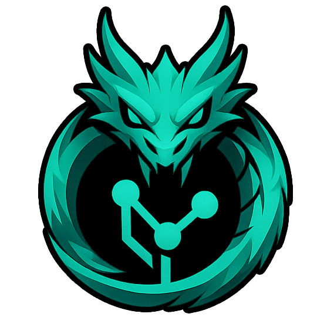

Direction 01Immersive
Branded Focus
A compact logo animation confirms GitWyrm is working while the message is generated.
Changes ready to commit3 STAGED
Msrc/commands/ai.rs+24-8
Msrc/stores/workspaceStore.ts+11-3
Asrc/ai/prompt.rs+42
Summary (required)

Generating commit message
Reading 3 staged files…
Writing a summary and description
Extended description…
Ready to generate